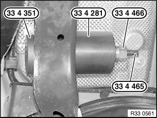
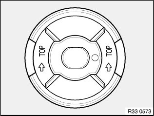
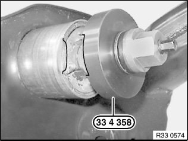
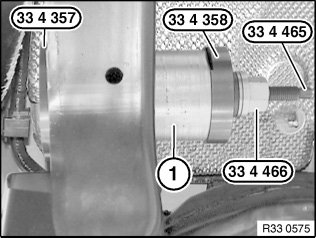

33 17 ... Replacing Rubber Mount (With Hydraulic Damping)
33 17 ... Replacing rubber mount (with hydraulic damping)Special tools required:

Pulling out rubber mount:
Pull out rubber mount with special tools 33 4 351, 33 4 281, 33 4 466 and 33 4 465.

Installing rubber mount:
Important!
Coat bearing bush in rear axle support and new rubber mount with Circo Light (refer to BMW Parts Department).
Draw in rubber mount with end shown from front into rear axle carrier. In so doing, make sure that the arrows on the rubber mount point upwards.

Align special tool 33 4 358 with rubber mount using openings.

Pull on rubber rubber mount (1) with special tools 33 4 357, 33 4 358, 33 4 466 and 33 4 465 as far as it will go.